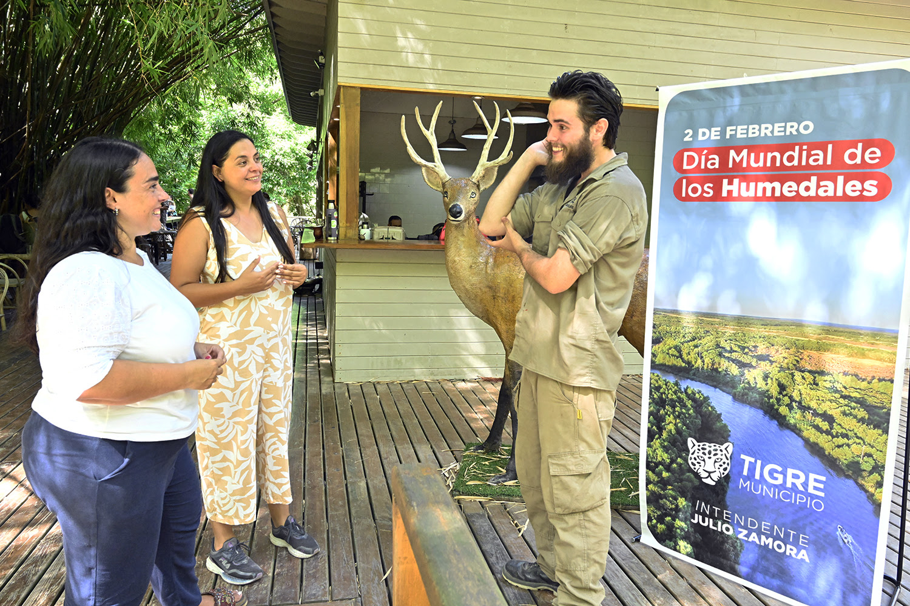

Fundación Vida Silvestre Argentina
En TigreVet, estamos orgullosos de colaborar con la Fundación Vida Silvestre Argentina, una organización sin fines de lucro líder en la protección de la biodiversidad y la promoción de un uso responsable de los recursos naturales en el país. Desde su creación en 1977, la Fundación ha trabajado incansablemente en la conservación de los ecosistemas y especies en riesgo, impulsando iniciativas para la preservación de la flora y fauna autóctonas de Argentina.
En TigreVet, estamos orgullosos de colaborar con la Fundación Vida Silvestre Argentina, una organización sin fines de lucro líder en la protección de la biodiversidad y la promoción de un uso responsable de los recursos naturales en el país. Desde su creación en 1977, la Fundación ha trabajado incansablemente en la conservación de los ecosistemas y especies en riesgo, impulsando iniciativas para la preservación de la flora y fauna autóctonas de Argentina.
La Fundación Vida Silvestre se enfoca en desarrollar proyectos que promuevan el equilibrio entre el desarrollo humano y la conservación de la naturaleza. A través de programas de educación ambiental, conservación de hábitats y campañas de concientización, esta organización busca crear un impacto duradero que inspire a las comunidades y a las futuras generaciones a cuidar el entorno que nos rodea.
¿Cómo lo hacemos?
En TigreVet, compartimos la misión de la Fundación Vida Silvestre de proteger y preservar la fauna local, especialmente en la región de Tigre. A través de nuestra alianza, buscamos generar conciencia sobre la importancia de cuidar y respetar la vida silvestre que habita esta área. Juntos trabajamos para informar a la comunidad sobre las especies que se encuentran en peligro, sus hábitats y cómo cada uno de nosotros puede contribuir a su protección.
Educación y concientización
En TigreVet organizamos charlas, talleres y campañas educativas sobre la fauna autóctona de la región, ayudando a difundir conocimientos valiosos y promover un cuidado responsable de la vida silvestre.
Apoyo en proyectos de conservación
Parte de los recursos generados por nuestros servicios son destinados a apoyar proyectos específicos de la Fundación, colaborando activamente en la protección de los ecosistemas y la fauna local.
Responsabilidad social y ambiental
Esta alianza refuerza nuestro compromiso con el medio ambiente, motivándonos a adoptar prácticas sostenibles y a inspirar a nuestros clientes y la comunidad a hacer lo mismo.
Sumate a nuestra misión
Creemos que cada acción cuenta. Al elegir a TigreVet para el cuidado de tu mascota, también estás colaborando en la protección de la fauna de nuestra región. Juntos, podemos hacer una diferencia en la preservación de los recursos naturales y el bienestar de las especies locales.
Para más información sobre la Fundación Vida Silvestre Argentina y sus programas, te invitamos a visitar su sitio web oficial: www.vidasilvestre.org.ar.